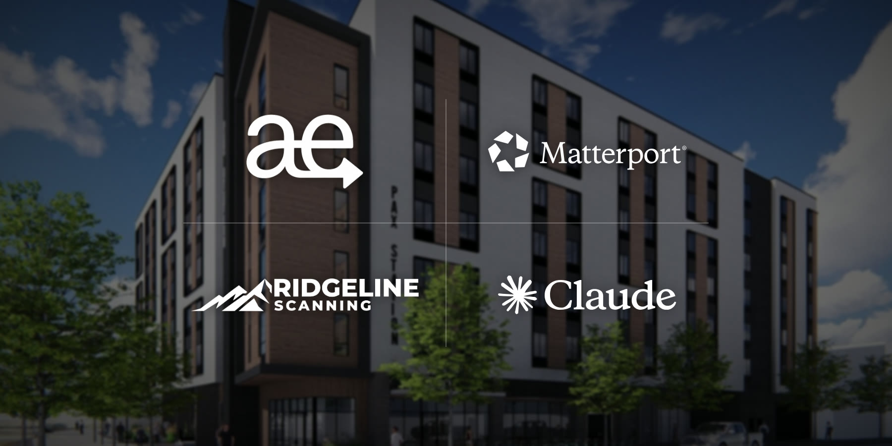
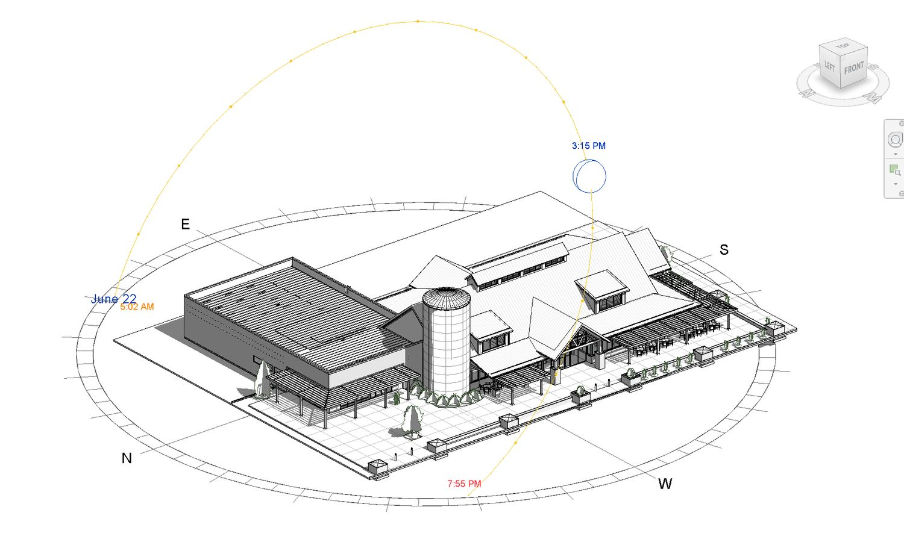

The Tech That Keeps Us Running: Aerro, Revit, Scanning and More
There's a moment in every project when the clock feels like it's working against you. A deadline shifts, a detail needs another look, or a client asks about site photos from three months ago. For a small firm like ours, those moments used to eat whole afternoons. Not anymore. Here's a closer look at the tools we rely on every day, and why they matter to the people we design for.

Technology in architecture isn't new. CAD changed the profession decades ago. But the pace of change right now, in modeling, scanning, project management and artificial intelligence, is unlike anything we've seen. For a firm our size, staying current isn't optional. It's how we deliver the precision of a much larger firm without the overhead.
Aerro: project management built for how we work
Running an architecture practice involves a lot more than design. There's scheduling, staffing, time tracking, task management, deadlines and client communication, and when those live in different places, things slip through the cracks.
That's why we run the studio on Aerro, a practice management platform for architecture, design and engineering firms built by our own Thomas Shorts. Thomas, one of our project leads, has a degree in Engineering and Design Technology from UVU, and he built Aerro to solve the pain points off-the-shelf tools never quite did for us. Projects, tasks, time tracking, scheduling, staffing and invoicing all live in one place. It's the first thing we open in the morning and the last thing we check before heading home.
Because it was designed around the realities of a small architecture practice, Aerro doesn't force us into someone else's workflow. It supports ours, and it keeps every project, deadline and hour visible to the whole team.
Meet Thomas ShortsRevit: the backbone of everything we design
If there's one tool we couldn't do without, it's Revit, our BIM (Building Information Modeling) platform. Every project takes shape there, from early massing studies through construction documents. The model is the project: change a wall height in a section and it updates in plan, in elevation and in the schedules automatically. That coordination catches errors before they reach the job site.

For our clients, that means fewer surprises during construction. For us, it means less time managing drawings and more time designing.
3D scanning and drones: starting from reality
With our partners at Ridgeline Scanning, we use Matterport to capture existing buildings as complete 3D scans, accurate enough to measure from and detailed enough to reference throughout design. We use scans to document existing conditions, to track progress during construction, and sometimes simply to let a client revisit their space from anywhere.
Our DJI drones give us perspective: aerial photos and video that show how a site relates to its neighbors, its slopes and its views in a way you can't see from the ground. We also use drone photogrammetry to model building exteriors, which feeds straight into our design work. Together, these tools mean we start from accurate data instead of assumptions.
Renderings and VR: see it before it's built
Photorealistic renderings and virtual reality walkthroughs let clients see their project, inside and out, long before construction begins, and walk through it at full scale. Decisions about light, materials and space get made with confidence instead of guesswork.
Claude: the newest member of the team
We'll be upfront: we use AI, and it's making us better at what we do. Claude, built by Anthropic, doesn't design buildings. It handles the repetitive, time-consuming work that used to pull us away from design: drafting a first pass of a project description, researching a code or zoning question, organizing meeting notes and preparing client communications. Every hour it saves is an hour back at the drawing board.
Why it matters for our clients
We're not a tech company. We're architects. But the tools we use shape the service our clients receive. When project management is tight, deadlines are met. When scans are accurate, design decisions are better informed. When the model is coordinated, construction goes smoother. And when AI handles the busywork, we have more time for what matters most: designing places that work for the people who use them.
Technology doesn't replace the human side of architecture. It amplifies it. If you're curious about our process or want to see any of these tools in action, reach out. We love talking about this stuff.
Adapted from our May 2026 post on Instagram.